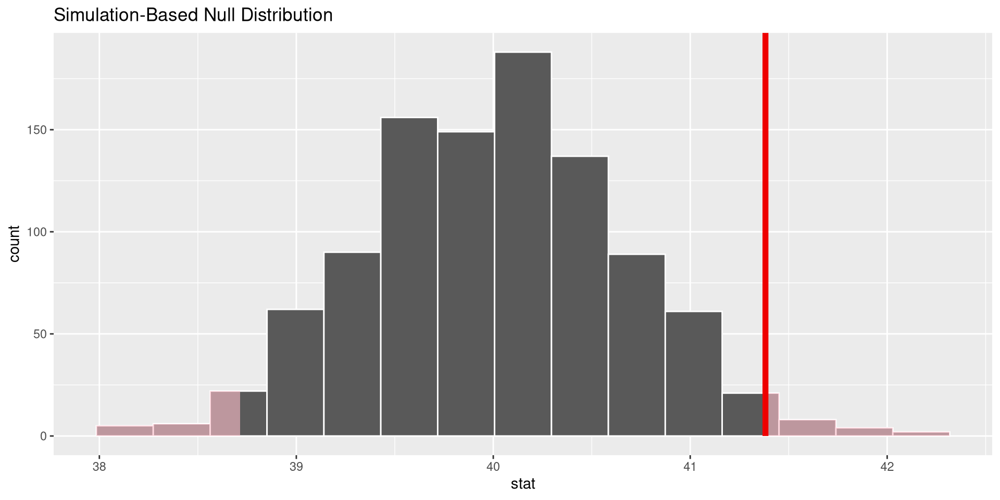

Rows: 500
Columns: 11
$ year <dbl> 2014, 1994, 1998, 1996, 1994, 1996, 1990, 2016, 2000, 1998, 20…
$ age <dbl> 36, 34, 24, 42, 31, 32, 48, 36, 30, 33, 21, 30, 38, 49, 25, 56…
$ sex <fct> male, female, male, male, male, female, female, female, female…
$ college <fct> degree, no degree, degree, no degree, degree, no degree, no de…
$ partyid <fct> ind, rep, ind, ind, rep, rep, dem, ind, rep, dem, dem, ind, de…
$ hompop <dbl> 3, 4, 1, 4, 2, 4, 2, 1, 5, 2, 4, 3, 4, 4, 2, 2, 3, 2, 1, 2, 5,…
$ hours <dbl> 50, 31, 40, 40, 40, 53, 32, 20, 40, 40, 23, 52, 38, 72, 48, 40…
$ income <ord> $25000 or more, $20000 - 24999, $25000 or more, $25000 or more…
$ class <fct> middle class, working class, working class, working class, mid…
$ finrela <fct> below average, below average, below average, above average, ab…
$ weight <dbl> 0.8960034, 1.0825000, 0.5501000, 1.0864000, 1.0825000, 1.08640…Ders 9: Hesapsal İstatistik
MBG1032 Biyoistatistik - Doç.Dr.Alper YILMAZ - 12 Mayıs 2025
Özet
- Çok çekirdek - simulasyon
- Hesapsal istatistik - “Allen Downey - A future of data science” başlıklı konuşması
- R/infer paketi
Hesapsal istatistik
“A future of data science” başlıklı konuşmadan alınmıştır
Geleneksel İstatistikten Simülasyona
- Şimdiye kadar t-test, ANOVA ve Ki-kare gibi parametrik testleri öğrendik
- Bu testler belirli varsayımlara dayanır (normallik, varyans homojenliği vb.)
- Bugün farklı bir bakış açısı ile tanışacağız
- Soru aynı: “Gözlediğimiz etki gerçek mi, yoksa şansa bağlı mı?”
Simülasyon Tabanlı İstatistik
- Modern bilgisayarların gücünü kullanarak veri yeniden örnekleme
- Rastgele süreçleri taklit etme
- Teorik dağılımlar yerine veriden öğrenme
- R’daki
inferpaketi bu yaklaşımı kolaylaştırır
infer Paketi Nedir?
- İstatistiksel çıkarım için tutarlı bir dilbilgisi sağlar
- tidyverse felsefesiyle uyumlu
- Karmaşık formüller yerine okunabilir kod akışı
- Dört ana fonksiyon:
specify(),hypothesize(),generate(),calculate()
infer İş Akışı

İnfer Paketi İş Akışı
Örnek Veri Seti: GSS
Bu veri seti Amerikan Genel Sosyal Anketi’nden 500 gözlem içerir ve yaş, eğitim durumu, politik görüş gibi değişkenler barındırır.
1. specify(): Değişkenleri Belirleme
- Hangi değişkenler üzerinde çalışacağımızı belirteriz
- Tek değişken için:
response = degisken - İki değişken için:
response = y, explanatory = xveyay ~ x
Response: age (numeric)
# A tibble: 500 × 1
age
<dbl>
1 36
2 34
3 24
4 42
5 31
6 32
7 48
8 36
9 30
10 33
# ℹ 490 more rowsResponse: age (numeric)
Explanatory: partyid (factor)
# A tibble: 500 × 2
age partyid
<dbl> <fct>
1 36 ind
2 34 rep
3 24 ind
4 42 ind
5 31 rep
6 32 rep
7 48 dem
8 36 ind
9 30 rep
10 33 dem
# ℹ 490 more rows2. hypothesize(): Sıfır Hipotezini Belirleme
- İki temel sıfır hipotezi türü:
"independence": İki değişken arasında ilişki yok"point": Parametre belirli bir değere eşit
# Bağımsızlık hipotezi
gss |>
specify(college ~ partyid, success = "degree") |>
hypothesize(null = "independence")Response: college (factor)
Explanatory: partyid (factor)
Null Hypothesis: independence
# A tibble: 500 × 2
college partyid
<fct> <fct>
1 degree ind
2 no degree rep
3 degree ind
4 no degree ind
5 degree rep
6 no degree rep
7 no degree dem
8 degree ind
9 degree rep
10 no degree dem
# ℹ 490 more rows# Ortalama için nokta hipotezi
gss |>
specify(response = hours) |>
hypothesize(null = "point", mu = 40)Response: hours (numeric)
Null Hypothesis: point
# A tibble: 500 × 1
hours
<dbl>
1 50
2 31
3 40
4 40
5 40
6 53
7 32
8 20
9 40
10 40
# ℹ 490 more rows3. generate(): Sıfır Dağılımı Oluşturma
- Sıfır hipotezi altında verinin nasıl görüneceğini simüle eder
- Üç temel yöntem:
bootstrap: Yerine koyarak örneklemepermute: Değişkenleri karıştırmadraw: Teorik dağılımdan örnekleme
# 1000 bootstrap örneği oluşturalım
gss |>
specify(response = hours) |>
hypothesize(null = "point", mu = 40) |>
generate(reps = 1000, type = "bootstrap")Response: hours (numeric)
Null Hypothesis: point
# A tibble: 500,000 × 2
# Groups: replicate [1,000]
replicate hours
<int> <dbl>
1 1 38.6
2 1 55.6
3 1 38.6
4 1 50.6
5 1 38.6
6 1 18.6
7 1 23.6
8 1 18.6
9 1 38.6
10 1 58.6
# ℹ 499,990 more rowsgenerate(): Veri Karıştırma Örneği
# Yaş ve parti ilişkisini kırmak için değişkenleri karıştıralım
gss |>
specify(partyid ~ age) |>
hypothesize(null = "independence") |>
generate(reps = 1000, type = "permute")Response: partyid (factor)
Explanatory: age (numeric)
Null Hypothesis: independence
# A tibble: 500,000 × 3
# Groups: replicate [1,000]
partyid age replicate
<fct> <dbl> <int>
1 ind 36 1
2 ind 34 1
3 rep 24 1
4 dem 42 1
5 dem 31 1
6 rep 32 1
7 ind 48 1
8 rep 36 1
9 dem 30 1
10 rep 33 1
# ℹ 499,990 more rowsBu adım, sıfır hipotezi doğru olsaydı veri nasıl görünürdü sorusuna cevap verir.
4. calculate(): İstatistik Hesaplama
- Simüle edilmiş verilerden istatistikler hesaplar
- Ortalama, medyan, oran, fark, t-istatistiği ve daha fazlası
- Sıfır dağılımını oluşturur
# Ortalama çalışma saatlerinin dağılımını hesaplayalım
gss |>
specify(response = hours) |>
hypothesize(null = "point", mu = 40) |>
generate(reps = 1000, type = "bootstrap") |>
calculate(stat = "mean")Response: hours (numeric)
Null Hypothesis: point
# A tibble: 1,000 × 2
replicate stat
<int> <dbl>
1 1 40.5
2 2 40.6
3 3 39.3
4 4 39.7
5 5 40.0
6 6 39.9
7 7 39.7
8 8 40.8
9 9 40.3
10 10 40.6
# ℹ 990 more rowsÖrnek: Haftalık Çalışma Saatleri Analizi
Soru: Ortalama çalışma saati gerçekten 40 saat mı?
# Gözlemlenen istatistiği hesaplayalım
obs_mean <- gss |>
specify(response = hours) |>
calculate(stat = "mean")
# Sıfır dağılımını oluşturalım
null_dist <- gss |>
specify(response = hours) |>
hypothesize(null = "point", mu = 40) |>
generate(reps = 1000, type = "bootstrap") |>
calculate(stat = "mean")Sonuçları Görselleştirme
# Sıfır dağılımını görselleştirelim
null_dist |>
visualize() +
shade_p_value(obs_stat = obs_mean, direction = "two-sided")

p-değeri Hesaplama
# İki kuyruklu p-değerini hesaplayalım
p_value <- null_dist |>
get_p_value(obs_stat = obs_mean, direction = "two-sided")
p_value# A tibble: 1 × 1
p_value
<dbl>
1 0.032Eğer ortalama gerçekten 40 saat olsaydı, gözlemlediğimiz kadar (veya daha) uç bir değer elde etme olasılığımız p-değeri kadardır.
Güven Aralıkları
Moleküler Biyoloji Örneği: Gen İfadesi
- Senaryo: İki farklı hücre tipinde (normal vs. kanser) bir genin ifade seviyesini karşılaştırıyoruz
- Sıfır hipotezi: Gen ifadesi hücre tipine göre değişmez
- infer ile simülasyon yaklaşımı nasıl kullanılır?
Örnek Kod: Gen İfadesi Karşılaştırması
# Verileri tanımlayalım
gen_ifadesi |>
# İfade seviyesi ~ hücre tipi ilişkisini belirtelim
specify(expression ~ cell_type) |>
# Sıfır hipotezi: Hücre tipi etkisi yok
hypothesize(null = "independence") |>
# 1000 permütasyon örneği oluşturalım
generate(reps = 1000, type = "permute") |>
# Ortalama farkını hesaplayalım
calculate(stat = "diff in means",
order = c("cancer", "normal"))Teorik Dağılım Kullanımı
inferteorik dağılımlarla da çalışabilir- t, F, Ki-kare ve z dağılımları için
assume() - Simülasyon ve teorik yaklaşımlar arasında geçiş yapabilirsiniz
infer’in Avantajları
- Daha anlaşılır istatistiksel süreç
- Varsayımlar konusunda daha esnek
- Öğrencilere istatistiği görselleştirme imkanı
- Tidyverse ekosistemiyle entegrasyon
- Karmaşık analizleri basitleştirme